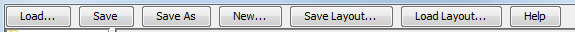

The topics covered in this section include:
Opening the Excitation Editor Window
The Excitation Editor allows the display and editing of muscle excitations and other control waveforms. In this example, the muscle excitations are organized into two columns. One of the muscle excitations (TRIlong) is currently selected in the excitation tree along the left-hand side of the Excitation Editor. The plot also appears in the excitation grid panel with a red border.
 |
|
|---|
Backup/Restore
When you modify an excitation in the Excitation Editor, the modification occurs immediately to the excitation. You do not need to apply the change to make it happen, nor can you cancel the change before it takes effect. To allow you to undo changes made to an excitation, there are two buttons in the control panel of the Excitation Editor that backup and restore it. When you first load an excitation into the Excitation Editor, a backup copy of it is made, so you can restore it without having to back it up first. Pressing the Backup button makes a backup copy of the excitation, overwriting the previous copy. Pressing the Restore button restores the excitation from its backup copy.
The Excitation Editor is a file editor, not a live object editor, so it reads and writes only to a file. If you make changes to a set of muscle excitations, you need to save it to a file before the changes are visible to the rest of OpenSim. Note also that some tools allow the specification of storage files (.sto) for control input (ForwardTool for example). In these cases the excitations are created and can be edited however they need to be saved into an xm-file. |
Excitation Editor Command Panel
|  | The command panel in the top of the Excitation Editor window allows you to load excitations from an XML file, save them to files, or create a new set of excitations for the current model. Details about the specific commands are described below: |
|---|
- Load…: When you press this button, you are prompted to browse for an XML file containing controls. Upon selecting the file, a filtering dialog box appears (see Selection Filtering Window), from which you can select the controls to be displayed in the Excitation Editor for inspection and editing.
- Save: Modified excitations, if any, are saved to the file that they came from
- New:This option is available only when a model is currently loaded into the application. Picking this option creates a new set of muscle excitations, with the following properties:
- Time is between [0.0-1.0]
- Min value of 0.0
- Max value of 1.0
- Excitation value of 0.1
After a new set of muscle excitations is created, the filtering window appears for you to select the excitation patterns you want to edit visually in the Excitation Editor.
- Save Layout… and Load Layout…: Due to the effort put into laying out excitations in the Excitation Editor (what muscles show and in which column), OpenSim offers the ability to save the layout to an external file (SaveLayout…) and to read a saved layout back into OpenSim (Load Layout…).
- Help: Hovering over this button brings up a bubble help with short description of the buttons and mouse clicks needed to perform various operations including zooming in/out, panning, selection, box-selection and deselection. Clicking on the button makes the help info persistent (stays up until closed by the user) as shown below.
{kind=link}